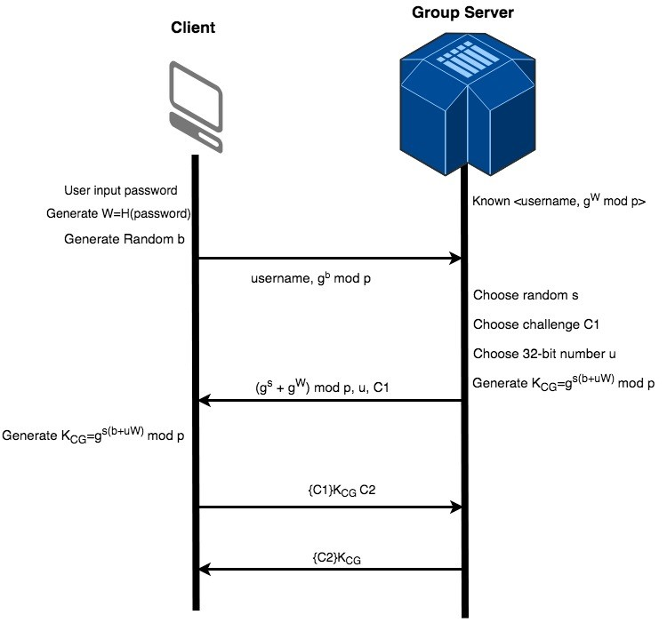
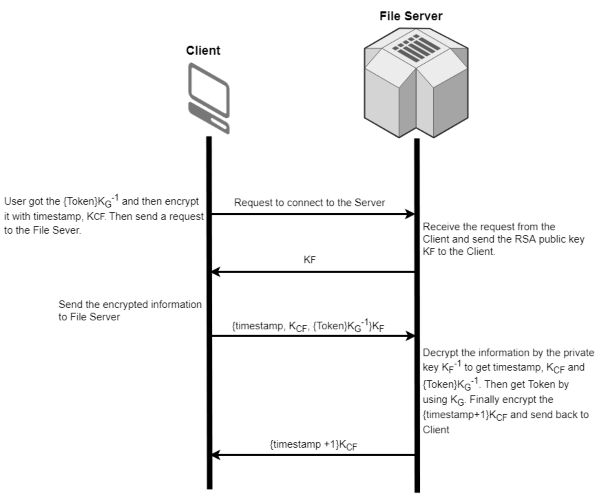

In T1, we use the Secure Remote Password(SRP) protocol for the group server to authenticate users and exchange an AES 256-bit symmetric key between the group server and users for message encryption. In T2, the group server signs the token with its private key, so users cannot modify the tokens. If the tokens are modified, the file servers can verified it by using the group server’s public key and reject to communicate with the users. In T3, users use the file server’s public key to encrypt a symmetric key, a timestamp and the token signed by the group server. The unauthorized file servers will not be able to decrypt the message. In T4, users use the symmetric key established in T3 to encrypt the files. The file servers decrypt the message and send back a message indicating that the file is successfully uploaded or downloaded.
At the bootstrap of the group server, there will be a prompt requiring the administrator to set up the admin’s username and password. If not, the group server would not be able to run. In our system, there could be more than only one administrator and only the administrators have the permissions to create users. In our scenario, this system is deployed in a medium company, family, or research labs, and new users can only be created by the administrators(usually are head of the Lab, Human resources office in a company or one of the members in the family). Since the administrators should be reachable offline, it will be the administrators' responsibility to create accounts for new members, and give the account information to the new user securely by meeting face to face. It means that users should know their username and password before using our program. To create a user, the administrator has to first log in with the client program and then types in a pair of username and password on the command line. This process is encrypted with the symmetric key between the administrator and group server, so the information of the new users is securely transmitted and stored in the group server’s database. We think it is not necessary to limit the design of the password, like at least eight characters, because the administrators should know how to design a strong password that is not vulnerable to dictionary attack. Upon the creation of new users, the administrator’s client program will calculate a “w” value based on the username and password, and further calculate “g^w mod p” to send to the group server. In the SRP6 provided by BouncyCastle, salt is added to provide better security. The group server stores “username, g^w mod p, salt” in the database. By not storing the plaintext of the password, the attackers cannot get enough information to log in even if the group server is compromised. When a user tries to log in by typing username and password, what is happening behind the scene is that the client and the group server exchange their credentials and calculate a secret “S” based on the exchanged credentials. If the user is valid, the user and the group server should both calculate the same “S” value. This value is used in generating an AES symmetric key “K” in 256 bits for further communication between the user and the group server. This SRP protocol forces the attacker to launch a dictionary attack. To protect from the dictionary attack, the password is added with a 256-bit salt value. If the group server’s database is not leaked, our system is safe from the dictionary attack. However, administrators should still create strong passwords in case the database is leaked. Users only can get their tokens by logging in their accounts and they have to know their username and password to log in. If the password cannot be cracked by dictionaries or rainbow tables, we are pretty sure that the process of token issuance is correct. Further messages are all encrypted with AES Cipher Blocking Chaining(CBC). In our system, we use the SRP6 package to implement our system provided by Bouncy Castle. The value g and p are shared and hardcoded in the servers and clients. The detailed steps of SPR are illustrated in this diagram.

As shown in the picture, the signed token contains 4 parts: username, issuer, groups, timestamp. Username, issuer, groups are all user informations, and the timestamp will be the creation time of this Token. The 4 parts are concatenated with splitter and signed with Group Server's private key(SHA256 with RSA). As a result, the Token can be viewed and verified using the public key of group server by anyone. However, it cannot be modified without invalidating the signature. If the user modifies the content of the token or make up the new token, the hash of the token would change and cause the group server signature to be invalid. And without knowing the private key of the group server, a new token or a modified token cannot be generated with valid signature.
The token will be generated by the Group Server and handed to the client through the secure channel established by SRP. The Token will be secure in the communication as long as the session key for the SRP is secure. When the User want to connect to a FileServer, the signed token will be packed with shared AES key and timestamp, together encrypted with File Server public key. The encrypted package will be sent to the File Server.
To authenticate the user, the File Server will first verity the signature of the signed token. Any message with invalid token signature will be ignored. The signature verification ensures that the token hasn't been modified since created by Group Server. Then the File Server will check signature timestamp and message timestamp. Signature timestamp marks the creation time of the token, which ensures the lifetime of the token to be 30 minutes. The file server will reject any connection with invalid token(older than 30 minutes). Message timestamp marks the send time of the message. The file server will keep an record of the most recent message timestamp. It will reject any message that is older than 20 seconds or has timestamp confliction with recorded recent timestamps. File Server will then look at the username, issuer, groups in the token to decide the user's previledges.
Authenticating file server is a big problem. For instance, if there is a man in the middle who wants to pretend as a server like “hacker server” instead of the true file server the client wants to connect to. It will expose the files, which the client wants to upload to the file server or download from the file server, into a dangerous environment. The files may be received by the untrusted “hacker server”. The “hacker server” might also send some malicious files to hack client PC. Therefore, the main problem is to make sure that the file server is what we want to access to, not others. The method we used to solve this problem is SSH authentication and RSA encrypt. There are four steps to finish authenticating and sharing the key. First, the user will send a request to the file server with the IP address the user inputs, asking for its public key. Second, the file server will return its public key to the client. However, its public key might be replaced or modified during the communication. The user should be responsible for verifying the public key of the file server from other trusted ways, for example, asking the manager of the file server offline.Besides, considering the security, the users should authenticate the key each time they want log in to the file server. The third step is user authentication. A package encrypted with file server public key containing token, timestamp, and created symmetric session key will be sent to the file server. We assume that the clocks of client and file server are synchronized. The signature timestamp inside the token is used to prevent malicious users to use any old tokens to access the files it should not be valid now. For example, if Alice in group A and group B, then Alice has been kicked out of the group B. However, Alice decided to use the old token when she was still in group B, which was also signed by the private key from the group server to send to the file server. Alice still can access the file inside the group B. The timestamp inside the token could prevent from this type of attack because the file server will check the signature timestamp and “old token” will be rejected. Besides, the timestamp in the package encrypted by the public key of the file server is used to make the transmission freshness. The valid period for this timestamp is 20 seconds, which means after 20 seconds, the whole information loses its efficacy. Fourth, after the file server get the information from the client and decrypt it. It would authenticate the reliability of the information by checking the timestamp, verifying the signature, and checking the privilege of user (recorded in the token). If the timestamp is reliable, the file server would encrypt the timestamp+1 by the shared key between the file server and client and send to the client. Once the User receives the response and decrypt with AES session key, the user can verify that it is timestamp+1. The File Server is authenticated because only the file server have the private key to decrypt the sent message and get session key with timestamp. Then the process of authentication and key exchange completes.

The token will be handed to the user through the secure channel established by SRP, and handed to the file servers encrypted with the file server’s public key.
The signed token will be packed with created 256 bit AES key and timestamp, together encrypted with File Server public key when the User want to connect to a FileServer. The file servers will decrypt the message with the private key and get the symmetric key. Later on, the communication between the client and the file server is encrypted with the symmetric key.
Because the client has the responsibility to verify the public key of file servers, the communication between the client and the file server using public key will prevent any router in the middle from getting the Token. In addition, all the information communicate between group server and client will be encrypted by the shared key created by SRP. In this way, all the information have been encrypted by secret keys.
Our first attempt for Group Server Authentication is to Use signed diffie-Hellman to establish a secure channel. This make problem complex because the Group Server and client will have to know each other's public key at the first place. Thus we switch to SRP authentication using username and password.
Our first attempt to authenticate user on File Server is to sign the token with a shared key between Group Server and File Server, like what Kerberos does. However, this requires all File Servers to be registered on the Group Server, which does not violate the requirement of this project. We finally decided to replace the shared key encrypted 'Ticket' with a RSA signature, so that the File Server only have to know the group server's public key and Group Server does not need to know anything.
Extra Credit: In T1, we use SRP to against illegitimate clients requesting tokens from the group server. This protocol is not only safe from passive attack but also from active attack. The SRP protocol effectively conveys a zero-knowledge proof from the user to the group server, so the group server does not store any useful information of password. Even if the attackers compromise the server, attackers cannot log in as users with the knowledge of the database because the only related information is "g^w mod p", which is a randomized data that attackers cannot get w from.